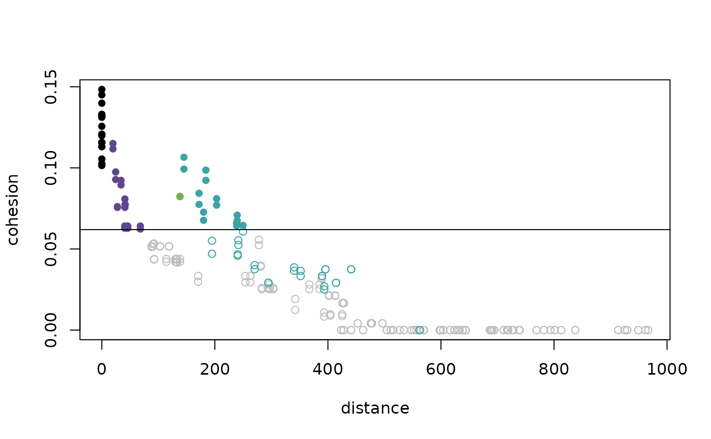
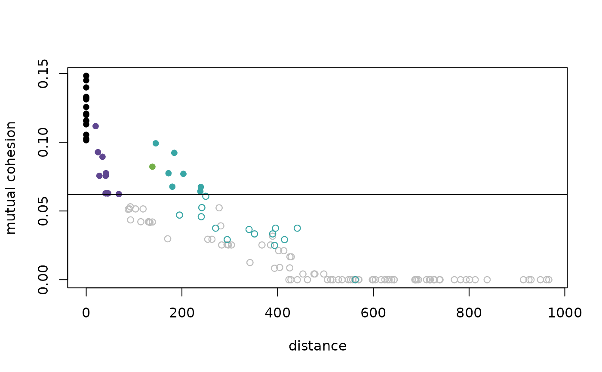
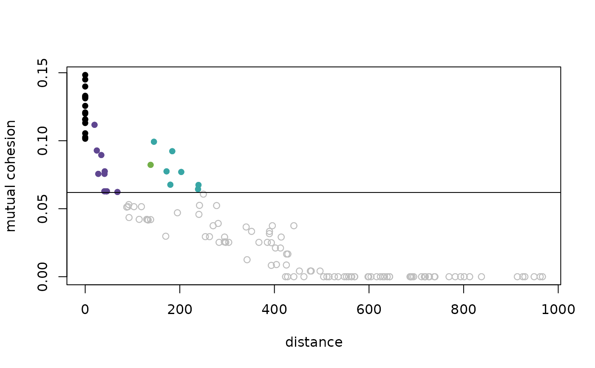

Provides a plot of cohesion against distance, with the threshold indicated by a horizontal line.
Usage
dist_cohesion_plot(
d,
mutual = FALSE,
xlim_max = NULL,
cex = 1,
colors = NULL,
weak_gray = FALSE
)Arguments
- d
A matrix of pairwise distances or a
distobject.- mutual
Set to
TRUEto consider mutual cohesion (i.e., symmetrized using the minimum); the default isFALSE.- xlim_max
If desired, set the maximum value of distance which is displayed on the x-axis.
- cex
Factor by which points should be scaled relative to the default.
- colors
A vector of color names, if none is given a default is provided.
- weak_gray
Set to
TRUEto display the plot with all weak ties plotted in gray; the default isFALSE.
Details
The plot of cohesion against distance provides a visualization for the
manner in which distance is transformed.
The threshold distinguishing strong and weak ties is indicated by a
horizontal line.
When there are separated regions with different density, one can often
observe vertical bands of color, see example below and Berenhaut, Moore, and
Melvin (2022). For each distance pair in d, the corresponding value of
cohesion is computed. If the pair is within a single cluster, the point is
colored (with the same color provided by the pald and
plot_community_graphs functions). Weak ties appear below the threshold.
Note that cohesion is not symmetric, and so all n^2 points are plotted.
A gray point above the threshold corresponds to a pair in which the value
of cohesion is greater than the threshold in only one direction. If one
only wants to observe mutual cohesion (i.e., cohesion made symmetric via
the minimum), set mutual = TRUE.
Examples
D <- dist(exdata2)
dist_cohesion_plot(D)

dist_cohesion_plot(D, mutual = TRUE)

C <- cohesion_matrix(D)
threshold <- strong_threshold(C) #the horizontal line
dist_cohesion_plot(D, mutual = TRUE, weak_gray = TRUE)
